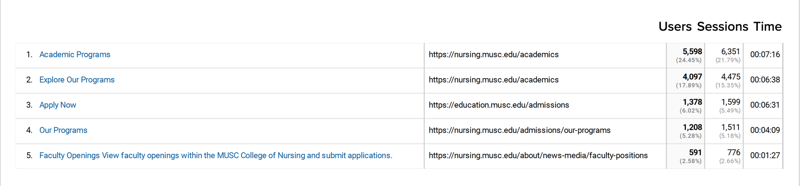
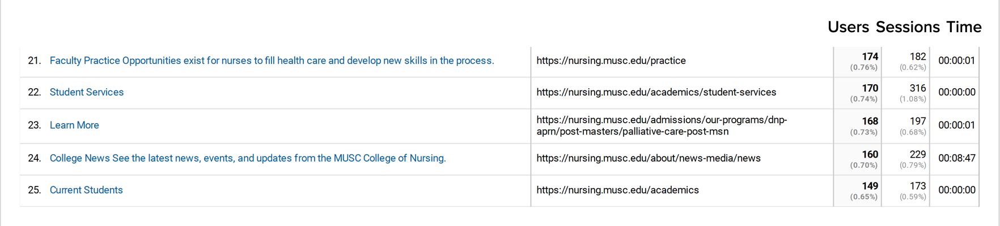

MUSC College of Nursing
Web & UX Design
Project Overview
This project aimed to redesign the university's website to enhance user experience, streamline information access, and improve engagement. The goal was to create a modern, intuitive, and responsive web interface that caters to the needs of various stakeholders, including students, faculty, staff, and prospective students.
My Role
As the lead UX designer and web developer, my role involved overseeing the entire redesign process from research and discovery to implementation. I collaborated closely with stakeholders, conducted user research, analyzed data, and proposed solutions to address identified issues and improve the overall user experience.
Tools
Figma, Google Analytics, SiteCore (CMS), and SiteImprove
Timeline
November 2022 - August 2023
Research
Web Audit
I examined the current website to pinpoint its strengths, weaknesses, and areas needing enhancement.
Key Findings
- The website overwhelms users with a plethora of information lacking a clear hierarchy.
- Redundant pages with identical content exist.
- Updates are inconsistent, leading to outdated information and media across numerous pages.
- Navigating to complete tasks demands an excessive number of clicks or actions.


Google Analytics
I analyzed website traffic and user behavior using Google Analytics.
Key Findings
- Prospective students comprise the majority of website visitors, and they are significantly interested in key pages such as admission information and academic programs.
Where users are engaged on the College of Nursing's website:
Where users are least engaged on the College of Nursing's website:
Google Analytics, January 2022 - December 2022
Competitive Analysis
I reviewed several nursing college's websites to discern emerging trends, exemplary practices, and potential areas for enhancement.
Key Findings
- Clear navigation pathways.
- Engaging visual content enhances user experience.
- Strong calls to action guide user interaction effectively.
Stakeholder Interviews
I conducted meetings with university administrators, faculty, and marketing teams to gain insights into their objectives, priorities, and challenges.
Key Findings
- Improve the presentation of academic programs and campus resources.
- Pages lacked visual appeal, hindering engagement.
Solutions
- Prioritize prospective students by focusing on their needs and interests throughout the website, highlighting important information like application deadlines and requirements, and incorporating features such as virtual tours and testimonials.
- Restructure navigation to simplify the user experience, reducing clicks and organizing information logically.
- Develop templates for key pages to provide centralized, user-centric information, and implement a content strategy that includes calls to action, search engine optimization, regular updates, clear information hierarchy, multimedia integration, and accessibility features.
Personas
I developed personas for our three user segments—undergraduate students, graduate students, and career changers—to better understand their goals, needs, and experiences.
Wireframes
Mid-Fidelity Wireframes
Using the insights gathered from our research analysis, I iteratively refined our design process to craft a comprehensive mid-fidelity wireframe.

 >
>
 >
>
Reflections
Throughout the redesign process, it became evident that a prospective student-centered approach was crucial for creating successful experiences. By prioritizing prospective students, I identified pain points and opportunities for improvement, leading to a more intuitive and engaging website design. Moving forward, continuous monitoring and optimization will be essential to ensure the website remains effective and relevant in meeting the evolving needs of users.
MUSC College of Nursing Website